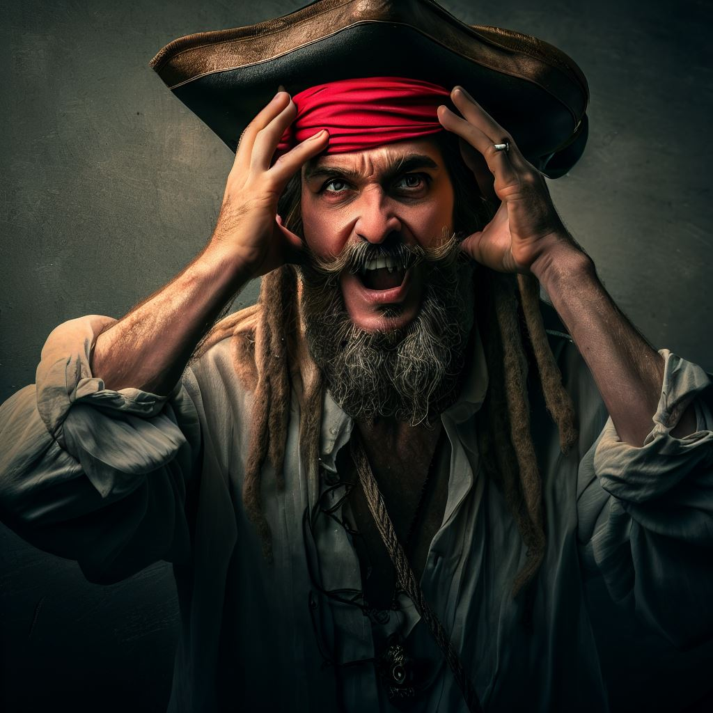
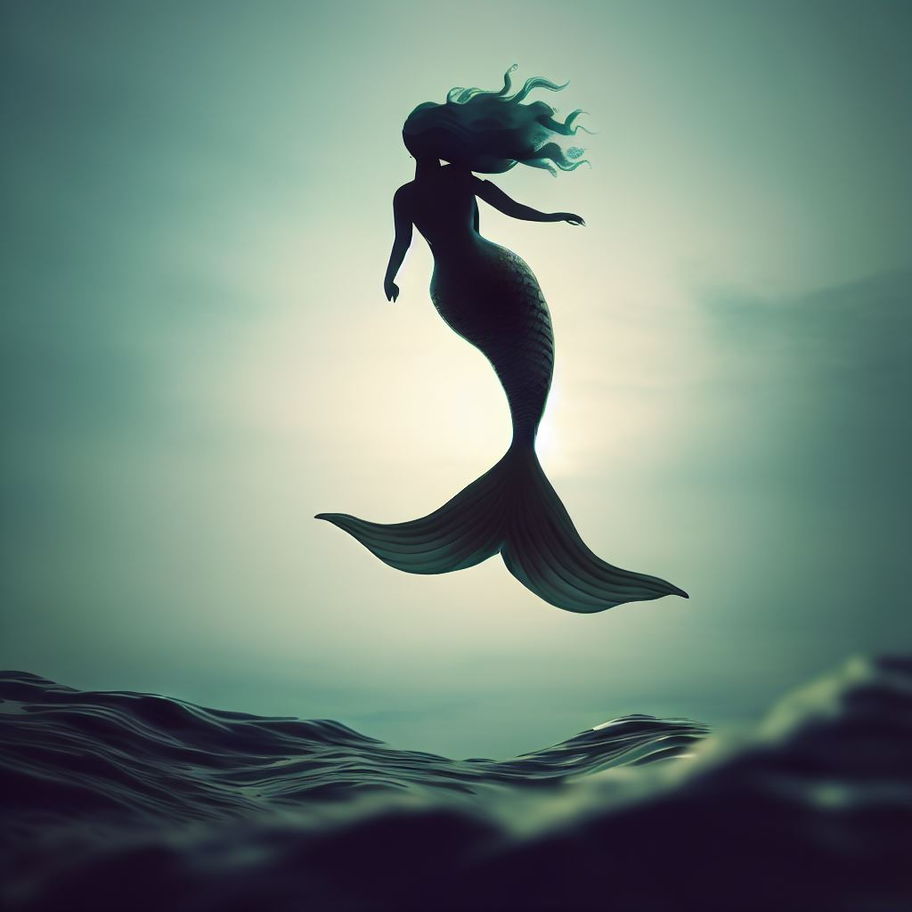
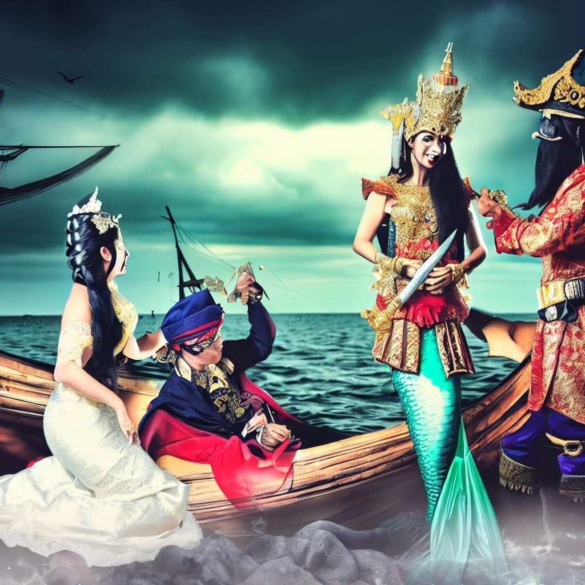
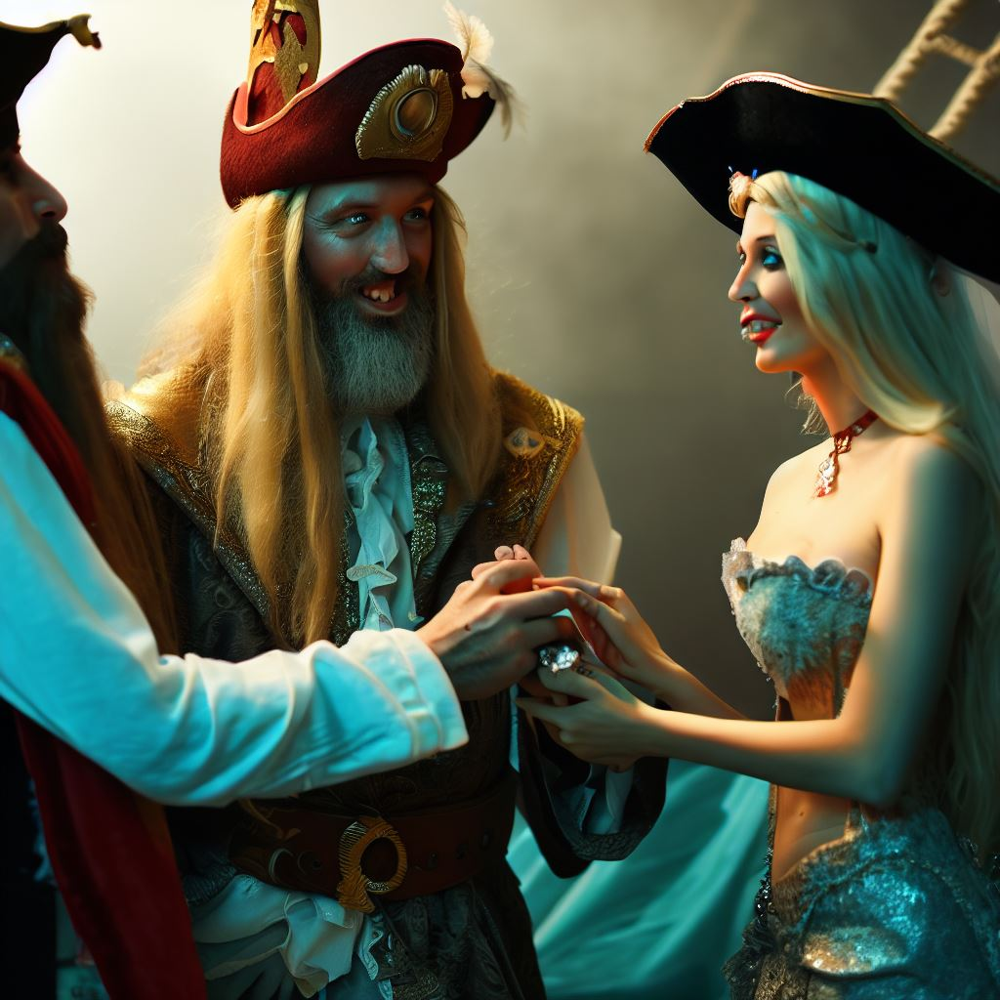

El canto de la sirena
El capitán Jack era un pirata temido y respetado en los siete mares.
Había saqueado muchos barcos, acumulado riquezas y fama, y vivido
aventuras increíbles. Pero había algo que le faltaba: el amor.

Un día, mientras navegaba por el Caribe, escuchó una voz dulce y
melodiosa que le llamaba desde el agua. Era una sirena, una criatura
mitad mujer y mitad pez, que le cantaba una canción irresistible.
Jack se sintió atraído por ella, y ordenó a su tripulación que se
detuvieran. Bajó a una balsa y se acercó a la sirena, que le sonrió
con una mirada seductora.

- ¿Quién eres, bella dama?
- Me llamo Marina, y soy la princesa de las sirenas
- ¿Qué quieres de mí, Marina?
- Quiero conocerte, Jack. Me gustas mucho. Eres valiente, fuerte y apuesto.
- ¿Cómo sabes mi nombre?
- Lo sé todo sobre ti. He seguido tus hazañas desde hace tiempo. Eres el pirata más famoso del mundo.
- ¿Y tú eres la princesa de las sirenas? ¿Qué haría tu padre si supiera que hablas con un pirata?
- No le importa. Mi padre es el rey de los mares, y me deja hacer lo que quiera. Él sabe que soy feliz contigo.
- ¿Feliz? ¿Acaso me amas?
- Sí, te amo, Jack. Y sé que tú también me amas. Puedo sentirlo en tu corazón.
- ¿Cómo puedes estar tan segura?
- Porque somos almas gemelas, Jack. Estamos destinados a estar juntos.
- ¿Almas gemelas? ¿Destinados? ¿No crees que eso es un poco… fantasioso?
- No, es la verdad. Ven conmigo, Jack. Te mostraré un mundo maravilloso bajo el mar. Te haré feliz.
- ¿Ir contigo? ¿Bajo el mar? ¿Cómo podría hacer eso? Yo soy un humano, tú eres una sirena.
- No hay problema. Tengo un hechizo que te permitirá respirar bajo el agua. Solo tienes que besarme, y te convertirás en uno de los míos.
- ¿Un hechizo? ¿Un beso? ¿Convertirme en uno de los tuyos? ¿Estás loca?
- No, estoy enamorada. Por favor, Jack, confía en mí. Te prometo que no te arrepentirás.
- No sé, Marina. Esto es muy extraño. Yo soy un pirata, tú eres una sirena. Somos de mundos diferentes. 
- No importan los mundos, Jack. Lo que importa es el amor. El amor lo puede todo. El amor nos une.
- ¿El amor lo puede todo? ¿El amor nos une? ¿De dónde sacas esas frases?
- De las historias que he leído. Me encanta leer. Tengo una colección de libros que he encontrado en los barcos hundidos. Hay historias de amor muy bonitas.
- ¿Historias de amor? ¿Qué clase de historias de amor?
- Historias de amor como la nuestra, Jack. Historias de amor entre piratas y sirenas.
- ¿Entre piratas y sirenas? ¿Eso existe?
- Sí, existe. Y es maravilloso. Te lo puedo demostrar. Mira, he hecho unas ilustraciones para ti.
- ¿Ilustraciones? ¿Para mí?
- Sí, para ti. Las he dibujado con mi cola. Son muy bonitas. Mira.
- ¿Con tu cola? ¿Son bonitas? Déjame ver.
Marina le mostró a Jack unas ilustraciones que había hecho con su cola. Eran dibujos de ellos dos, abrazados, besándose, nadando juntos, y viviendo felices bajo el mar. Jack se quedó impresionado por la belleza y el detalle de las ilustraciones. Se dio cuenta de que Marina era una artista talentosa, y de que realmente lo amaba.
- Wow, Marina. Estas ilustraciones son increíbles. No sabía que podías dibujar así.
- Gracias, Jack. Me alegro de que te gusten. Las he hecho con todo mi amor.
- Se nota, Marina. Se nota. Y sabes qué, Marina. Creo que tú también me gustas. Eres muy bonita, muy dulce, y muy especial.
- ¿De verdad, Jack? ¿Te gusto?
- Sí, de verdad, Marina. Me gustas. Y creo que quiero besarte.
- ¿Besarme? ¿De verdad, Jack? ¿Quieres besarme?
- Sí, de verdad, Marina. Quiero besarte. Y quiero ir contigo bajo el mar.
- ¿Ir conmigo bajo el mar? ¿De verdad, Jack? ¿Quieres ir conmigo bajo el mar?
- Sí, de verdad, Marina. Quiero ir contigo bajo el mar. Quiero ver tu mundo. Quiero estar contigo.
- Oh, Jack. Eres el mejor. Eres el mejor pirata del mundo. Eres el mejor hombre del mundo. Eres el mejor amor del mundo.
- Y tú, Marina. Eres la mejor. Eres la mejor sirena del mundo. Eres la mejor mujer del mundo. Eres el mejor amor del mundo.
- Te amo, Jack.
- Te amo, Marina.
Jack y Marina se besaron con pasión, y el hechizo se activó. Jack sintió que podía respirar bajo el agua, y que su cuerpo se transformaba. Le salieron escamas, aletas, y una cola. Se convirtió en un tritón, un hombre-pez, el compañero perfecto para Marina. Los dos se tomaron de la mano, y se sumergieron en el océano. Dejaron atrás el barco pirata, la tripulación, y el mundo humano. Se adentraron en el reino de las sirenas, donde los esperaba el rey, el padre de Marina, que los recibió con alegría. Jack y Marina se casaron, y vivieron felices para siempre, cantando, nadando, y amándose bajo el mar. Y de alli salen las actuales supersticiones de que las Sirenas ahogaban a los Piratas, lo que la mayoria no sabia es que es una gran historia de amor.
Fin